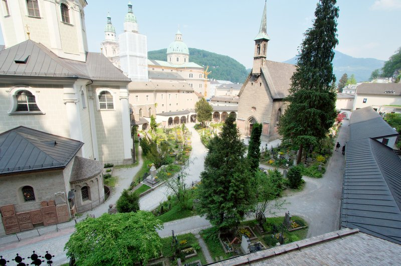
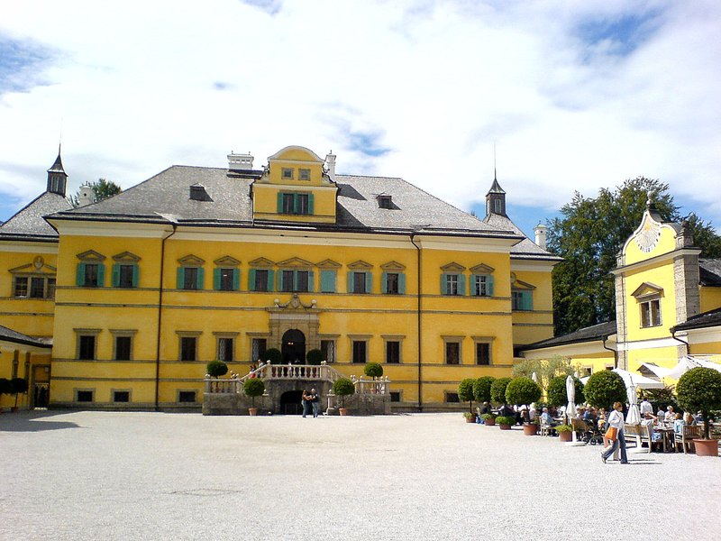

TRIP OVERVIEW
Day 1 – Hohensalzburg Fortress · St. Peter's Abbey & Catacombs · DomQuartier Salzburg
Day 2 – Mirabell Palace & Gardens · Hellbrunn Palace & Trick Fountains · Untersberg
Day 1
🏨 From Hotel: 🚶 11 min · 🚕 4 min → Hohensalzburg Fortress
1. Hohensalzburg Fortress
↳ One of the largest fully preserved medieval fortresses in Europe, crowning the Festungsberg above the old town; the FestungsBahn funicular carries you up to ramparts, state rooms and sweeping views.
🏛️ Daily 8:30am - 8:00pm
⏰ ~2 hr

🚶 3 min · 🚕 3 min → St. Peter's Abbey & Catacombs
2. St. Peter's Abbey & Catacombs
↳ Founded around 696, the oldest monastery in the German-speaking world; its catacombs are hewn into the Mönchsberg cliff above a baroque cemetery of wrought-iron crosses and arcades.
🏛️ Daily 10:00am - 12:30pm · 1:00pm - 6:00pm
⏰ ~45 min
💵 Cash Only

🚶 4 min · 🚕 4 min → DomQuartier Salzburg
3. DomQuartier Salzburg
↳ A single grand circuit through the Prince-Archbishops' Residenz state rooms, the cathedral's organ gallery and arcade terraces, and the abbey's art collections — baroque Salzburg's seat of power, all under one ticket.
🏛️ Daily 10:00am - 5:00pm
🚫 Closed Tuesday
⏰ ~2 hr

🚶 6 min · 🚕 6 min → hotel
Day 2
🏨 From Hotel: 🚶 13 min · 🚕 6 min → Mirabell Palace & Gardens
1. Mirabell Palace & Gardens
↳ Baroque pleasure gardens laid out in 1690 — the flowered parterre, Pegasus fountain and Grand Staircase frame a postcard view of the fortress, and the steps and arbours feature in The Sound of Music.

🚕 17 min → Hellbrunn Palace & Trick Fountains
2. Hellbrunn Palace & Trick Fountains
↳ A 1615 prince-archbishop's summer villa built for play — hidden water jets soak the unwary, a water-powered mechanical theatre turns 200 figures, and grottoes still ambush visitors four centuries on.
🏛️ Daily 9:30am - 6:30pm
⏰ ~2 hr

🚕 9 min → Untersberg
3. Untersberg
↳ A cable car climbs from St. Leonhard to the 1,776 m Geiereck summit in under nine minutes, opening a panorama over Salzburg, the Salzkammergut lakes and the peaks of Berchtesgaden.
🏛️ Daily 8:30am - 5:30pm
⏰ ~2 hr

🚕 20 min → hotel
🗓️ Weekly Closures
No notable city-wide weekly closures in Salzburg.
📅 Tours
Viator
↳ The classic half-day tour to the film's settings — Leopoldskron and Hellbrunn, the Nonnberg convent, Mondsee's wedding church and the lakes of the Salzkammergut, with a guided pass through the old town.
🕐 9:15am · ⏳ 4 hr · 👥 Coach
🚶 13 min · 🚕 6 min
☕ Cappuccino
Café Tomaselli · 4.2⭐ · 5000+ reviews
Café-Konditorei Fürst · 4.5⭐ · 1000+ reviews
Café Bazar · 4.2⭐ · 4800+ reviews
🏛️ Monday - Saturday 7:30am - 7:30pm · Sunday 9:00am - 6:00pm
🚶 7 min · 🚕 7 min
Kaffee Alchemie · 4.8⭐ · 3700+ reviews
🏛️ Monday - Friday 7:30am - 6:00pm · Saturday - Sunday 10:00am - 6:00pm
🚶 10 min · 🚕 6 min
🫕 Restaurants Near Hotel
Zum Eulenspiegel · 4.0⭐ · 800+ reviews
↳ Atmospheric old-town tavern, classic Austrian plates and game.
🏛️ Daily 11:00am - 11:00pm
🚶 3 min · 🚕 3 min
Restaurant Triangel · 4.5⭐ · 990+ reviews
↳ Market-driven Austrian cooking by the festival halls, organic and fair.
🏛️ Tuesday - Saturday 11:30am - 12:00am
🚫 Closed Sunday & Monday
🚶 5 min · 🚕 5 min
Zwettler's · 4.5⭐ · 5400+ reviews
↳ Rustic 160-year-old wirtshaus, hearty Austrian portions and local beer.
🏛️ Tuesday - Saturday 11:30am - 1:00am · Sunday - Monday 11:30am - 10:00pm
🚶 9 min · 🚕 7 min
Bärenwirt · 4.5⭐ · 8700+ reviews
↳ Historic 1663 Mülln inn — Backhendl, goulash and Augustiner beer.
🏛️ Daily 11:00am - 11:00pm
🚶 12 min · 🚕 8 min
🍽️ Downtown Restaurants
St. Peter Stiftskulinarium · 4.0⭐ · 130+ reviews
↳ Refined Austrian fine dining inside Europe's oldest restaurant.
🏛️ Tuesday - Sunday 11:30am - 11:00pm
🚫 Closed Monday
Blaue Gans · 4.3⭐ · 300+ reviews
↳ Modern Alpine-Mediterranean cooking in the city's oldest inn.
🏛️ Monday - Saturday 12:00pm - 12:00am
🚫 Closed Sunday
🍮 Local Tastes
Salzburger Nockerl
↳ A cloud-light baked soufflé of whipped egg whites in three peaks, dusted with sugar to mimic the city's hills — sweet, warm and meant to be shared.
Original Salzburger Mozartkugel
↳ A hand-rolled sphere of pistachio marzipan and nougat dipped in dark chocolate, invented by Paul Fürst in 1890 and still made by hand to the original recipe.
Bosna
↳ Salzburg's own street-food sausage — bratwurst in a griddled white roll with onions, parsley and a curry-spiced mustard, born at the Balkan Grill on Getreidegasse.
Augustiner Bräu
↳ Monastery-brewed beer poured from wooden kegs into stone steins, drunk in Salzburg's vast Mülln beer garden — a tradition running since 1621.
🎭 Shows, Performances & Concerts
Salzburg Marionette Theatre
↳ World-famous marionette opera — full Mozart and Sound of Music productions performed by hand-carved puppets since 1913.
🚶 6 min · 🚕 8 min
Großes Festspielhaus
↳ The Salzburg Festival's grand hall — opera and the world's leading orchestras on a 100-metre stage carved into the Mönchsberg.
🚶 8 min · 🚕 8 min
🚆 Train Stations Near Hotel
🚊 Salzburg Hauptbahnhof
ÖBB Railjet and regional lines → Vienna · Hallstatt · Munich · Innsbruck.
🚶 24 min · 🚕 12 min
⛲️ Day Trips by Train
Linz · 1 hr 10 min
↳ Upper Austria's third city — the Lentos Museum of modern art on the Danube, the vast Ars Electronica Center on digital culture, and the old city around Hauptplatz. Fast Railjet trains run direct on the Westbahn corridor.
Munich · 1 hr 30 min
↳ Bavaria's capital across the border — Marienplatz, the Residenz and the English Garden; direct regional and EuroCity trains run there in about an hour and a half.
Innsbruck · 1 hr 50 min
↳ The Tyrolean capital ringed by 2,000-metre peaks — the medieval Altstadt, the golden Goldenes Dachl oriel, and the Hofburg palace. Cable cars at the city centre reach alpine meadows in under 10 minutes.
Vienna · 2 hr 22 min
↳ Austria's imperial capital — the Hofburg, Schönbrunn, Ringstrasse and grand coffee houses; an easy day out on the high-speed Railjet.
Hallstatt · 2 hr 35 min
⭐ Michelin Restaurants
⭐⭐ Ikarus
↳ Rotating residency of the world's top guest chefs in the Red Bull Hangar-7.
🚕 10 min
✨ A Note From Claude
Salzburg rewards looking up. The fortress watches the whole city, the Mönchsberg and Untersberg ring it in green and grey, and from the Mirabell parterre the castle lines up perfectly above the flowerbeds.
Time your two days around the light. The Altstadt is at its best in the morning before the day-trippers arrive; the south — Hellbrunn's gardens and the Untersberg summit — glows in the long afternoon. Carry cash for the catacombs, keep a little time for the trick fountains' surprises, and let the rest unfold on foot between river and rock.